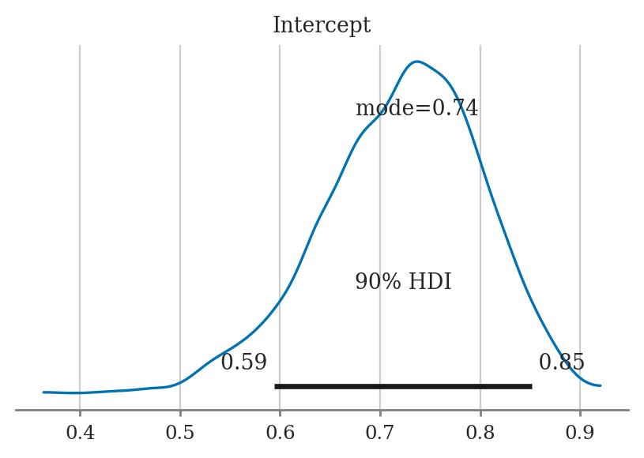
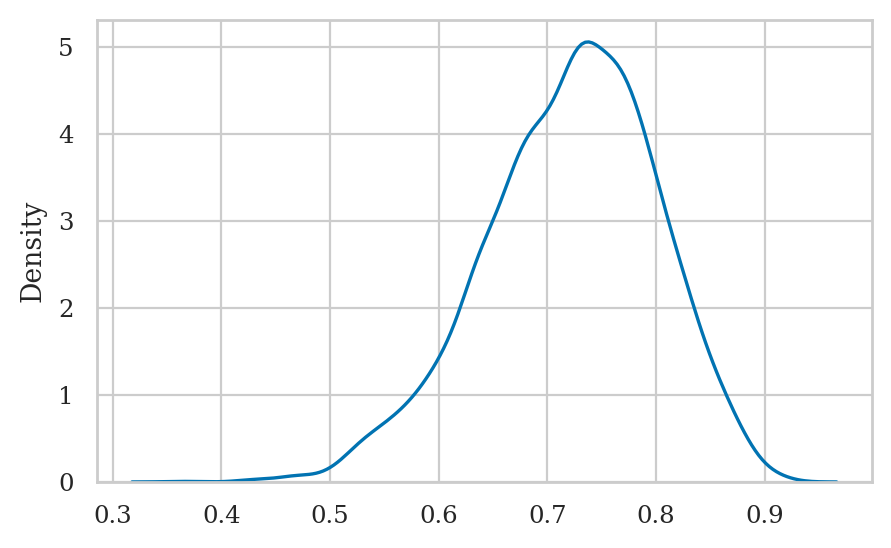
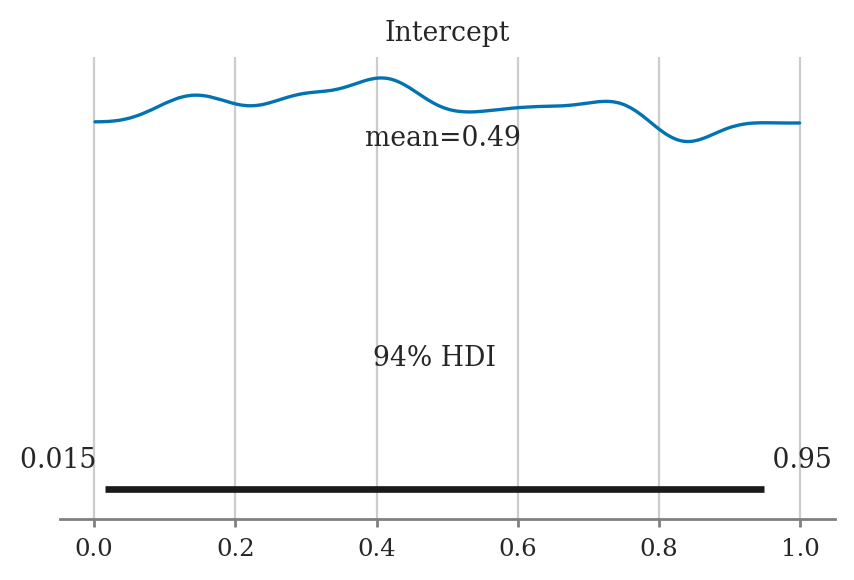
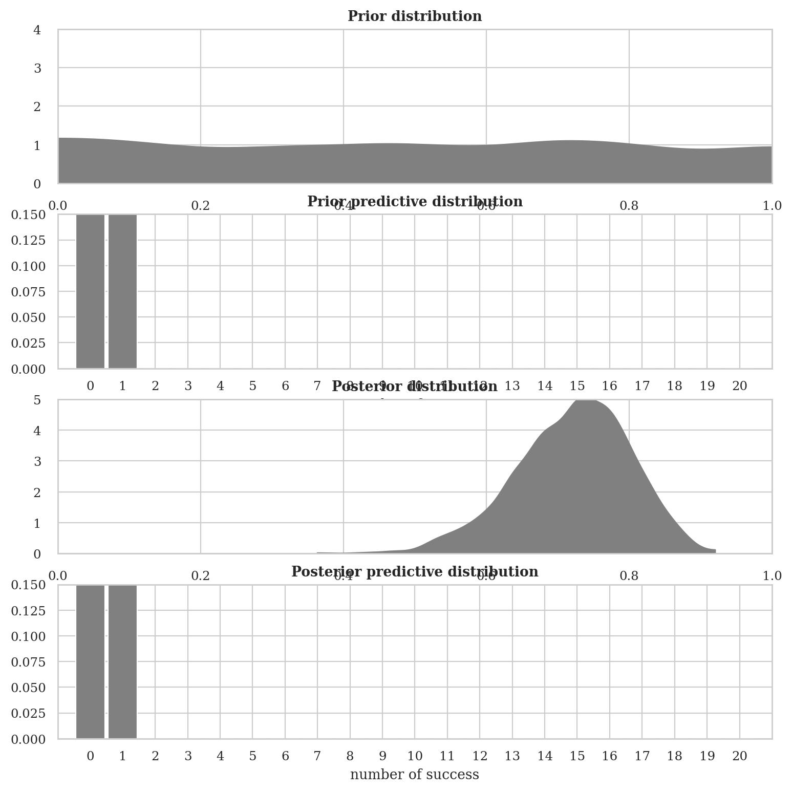
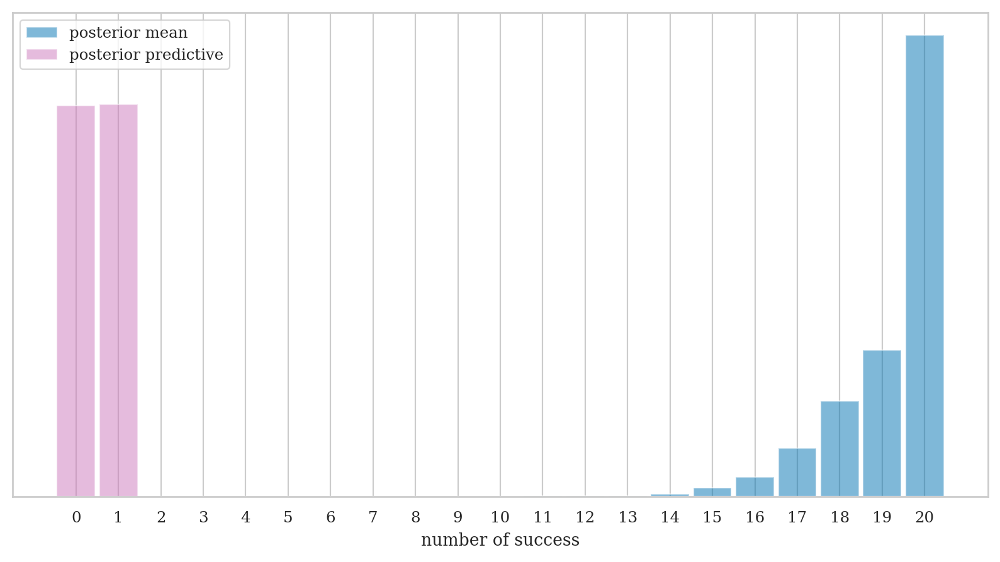

Section 5.2 — Bayesian inference computations#
This notebook contains the code examples from Section 5.2 Bayesian inference computations from the No Bullshit Guide to Statistics.
See also:
Chp_04.ipynb
Chp_05.ipynb
homework_week02_ivan_savov.ipynb
Notebook setup#
# load Python modules
import os
import numpy as np
import pandas as pd
import seaborn as sns
import matplotlib.pyplot as plt
# Figures setup
plt.clf() # needed otherwise `sns.set_theme` doesn"t work
from plot_helpers import RCPARAMS
RCPARAMS.update({"figure.figsize": (5, 3)}) # good for screen
# RCPARAMS.update({"figure.figsize": (5, 1.6)}) # good for print
sns.set_theme(
context="paper",
style="whitegrid",
palette="colorblind",
rc=RCPARAMS,
)
# High-resolution please
%config InlineBackend.figure_format = "retina"
# Where to store figures
DESTDIR = "figures/bayesian/computations"
<Figure size 640x480 with 0 Axes>
# set random seed for repeatability
np.random.seed(42)
#######################################################
Example 1: estimating the probability of a biased coin#
from scipy.stats import bernoulli
true_p = 0.7
np.random.seed(46)
wins = bernoulli(true_p).rvs(30)
dfcoin = pd.DataFrame({"win": wins})
# dfcoin
dfcoin["win"].mean()
0.7333333333333333
import bambi as bmb
formula = "win ~ 1"
priors1 = {
"Intercept": bmb.Prior("Beta", alpha=1, beta=1),
}
#######################################################
mod1 = bmb.Model(formula, priors=priors1,
family="bernoulli", link="identity",
data=dfcoin)
mod1
Formula: win ~ 1
Family: bernoulli
Link: p = identity
Observations: 30
Priors:
target = p
Common-level effects
Intercept ~ Beta(alpha: 1.0, beta: 1.0)
mod1.build()
mod1.graph()
---------------------------------------------------------------------------
FileNotFoundError Traceback (most recent call last)
File /opt/hostedtoolcache/Python/3.8.18/x64/lib/python3.8/site-packages/graphviz/backend/execute.py:76, in run_check(cmd, input_lines, encoding, quiet, **kwargs)
75 kwargs['stdout'] = kwargs['stderr'] = subprocess.PIPE
---> 76 proc = _run_input_lines(cmd, input_lines, kwargs=kwargs)
77 else:
File /opt/hostedtoolcache/Python/3.8.18/x64/lib/python3.8/site-packages/graphviz/backend/execute.py:96, in _run_input_lines(cmd, input_lines, kwargs)
95 def _run_input_lines(cmd, input_lines, *, kwargs):
---> 96 popen = subprocess.Popen(cmd, stdin=subprocess.PIPE, **kwargs)
98 stdin_write = popen.stdin.write
File /opt/hostedtoolcache/Python/3.8.18/x64/lib/python3.8/subprocess.py:858, in Popen.__init__(self, args, bufsize, executable, stdin, stdout, stderr, preexec_fn, close_fds, shell, cwd, env, universal_newlines, startupinfo, creationflags, restore_signals, start_new_session, pass_fds, encoding, errors, text)
855 self.stderr = io.TextIOWrapper(self.stderr,
856 encoding=encoding, errors=errors)
--> 858 self._execute_child(args, executable, preexec_fn, close_fds,
859 pass_fds, cwd, env,
860 startupinfo, creationflags, shell,
861 p2cread, p2cwrite,
862 c2pread, c2pwrite,
863 errread, errwrite,
864 restore_signals, start_new_session)
865 except:
866 # Cleanup if the child failed starting.
File /opt/hostedtoolcache/Python/3.8.18/x64/lib/python3.8/subprocess.py:1720, in Popen._execute_child(self, args, executable, preexec_fn, close_fds, pass_fds, cwd, env, startupinfo, creationflags, shell, p2cread, p2cwrite, c2pread, c2pwrite, errread, errwrite, restore_signals, start_new_session)
1719 err_msg = os.strerror(errno_num)
-> 1720 raise child_exception_type(errno_num, err_msg, err_filename)
1721 raise child_exception_type(err_msg)
FileNotFoundError: [Errno 2] No such file or directory: PosixPath('dot')
The above exception was the direct cause of the following exception:
ExecutableNotFound Traceback (most recent call last)
File /opt/hostedtoolcache/Python/3.8.18/x64/lib/python3.8/site-packages/IPython/core/formatters.py:974, in MimeBundleFormatter.__call__(self, obj, include, exclude)
971 method = get_real_method(obj, self.print_method)
973 if method is not None:
--> 974 return method(include=include, exclude=exclude)
975 return None
976 else:
File /opt/hostedtoolcache/Python/3.8.18/x64/lib/python3.8/site-packages/graphviz/jupyter_integration.py:98, in JupyterIntegration._repr_mimebundle_(self, include, exclude, **_)
96 include = set(include) if include is not None else {self._jupyter_mimetype}
97 include -= set(exclude or [])
---> 98 return {mimetype: getattr(self, method_name)()
99 for mimetype, method_name in MIME_TYPES.items()
100 if mimetype in include}
File /opt/hostedtoolcache/Python/3.8.18/x64/lib/python3.8/site-packages/graphviz/jupyter_integration.py:98, in <dictcomp>(.0)
96 include = set(include) if include is not None else {self._jupyter_mimetype}
97 include -= set(exclude or [])
---> 98 return {mimetype: getattr(self, method_name)()
99 for mimetype, method_name in MIME_TYPES.items()
100 if mimetype in include}
File /opt/hostedtoolcache/Python/3.8.18/x64/lib/python3.8/site-packages/graphviz/jupyter_integration.py:112, in JupyterIntegration._repr_image_svg_xml(self)
110 def _repr_image_svg_xml(self) -> str:
111 """Return the rendered graph as SVG string."""
--> 112 return self.pipe(format='svg', encoding=SVG_ENCODING)
File /opt/hostedtoolcache/Python/3.8.18/x64/lib/python3.8/site-packages/graphviz/piping.py:104, in Pipe.pipe(self, format, renderer, formatter, neato_no_op, quiet, engine, encoding)
55 def pipe(self,
56 format: typing.Optional[str] = None,
57 renderer: typing.Optional[str] = None,
(...)
61 engine: typing.Optional[str] = None,
62 encoding: typing.Optional[str] = None) -> typing.Union[bytes, str]:
63 """Return the source piped through the Graphviz layout command.
64
65 Args:
(...)
102 '<?xml version='
103 """
--> 104 return self._pipe_legacy(format,
105 renderer=renderer,
106 formatter=formatter,
107 neato_no_op=neato_no_op,
108 quiet=quiet,
109 engine=engine,
110 encoding=encoding)
File /opt/hostedtoolcache/Python/3.8.18/x64/lib/python3.8/site-packages/graphviz/_tools.py:171, in deprecate_positional_args.<locals>.decorator.<locals>.wrapper(*args, **kwargs)
162 wanted = ', '.join(f'{name}={value!r}'
163 for name, value in deprecated.items())
164 warnings.warn(f'The signature of {func.__name__} will be reduced'
165 f' to {supported_number} positional args'
166 f' {list(supported)}: pass {wanted}'
167 ' as keyword arg(s)',
168 stacklevel=stacklevel,
169 category=category)
--> 171 return func(*args, **kwargs)
File /opt/hostedtoolcache/Python/3.8.18/x64/lib/python3.8/site-packages/graphviz/piping.py:121, in Pipe._pipe_legacy(self, format, renderer, formatter, neato_no_op, quiet, engine, encoding)
112 @_tools.deprecate_positional_args(supported_number=2)
113 def _pipe_legacy(self,
114 format: typing.Optional[str] = None,
(...)
119 engine: typing.Optional[str] = None,
120 encoding: typing.Optional[str] = None) -> typing.Union[bytes, str]:
--> 121 return self._pipe_future(format,
122 renderer=renderer,
123 formatter=formatter,
124 neato_no_op=neato_no_op,
125 quiet=quiet,
126 engine=engine,
127 encoding=encoding)
File /opt/hostedtoolcache/Python/3.8.18/x64/lib/python3.8/site-packages/graphviz/piping.py:149, in Pipe._pipe_future(self, format, renderer, formatter, neato_no_op, quiet, engine, encoding)
146 if encoding is not None:
147 if codecs.lookup(encoding) is codecs.lookup(self.encoding):
148 # common case: both stdin and stdout need the same encoding
--> 149 return self._pipe_lines_string(*args, encoding=encoding, **kwargs)
150 try:
151 raw = self._pipe_lines(*args, input_encoding=self.encoding, **kwargs)
File /opt/hostedtoolcache/Python/3.8.18/x64/lib/python3.8/site-packages/graphviz/backend/piping.py:212, in pipe_lines_string(engine, format, input_lines, encoding, renderer, formatter, neato_no_op, quiet)
206 cmd = dot_command.command(engine, format,
207 renderer=renderer,
208 formatter=formatter,
209 neato_no_op=neato_no_op)
210 kwargs = {'input_lines': input_lines, 'encoding': encoding}
--> 212 proc = execute.run_check(cmd, capture_output=True, quiet=quiet, **kwargs)
213 return proc.stdout
File /opt/hostedtoolcache/Python/3.8.18/x64/lib/python3.8/site-packages/graphviz/backend/execute.py:81, in run_check(cmd, input_lines, encoding, quiet, **kwargs)
79 except OSError as e:
80 if e.errno == errno.ENOENT:
---> 81 raise ExecutableNotFound(cmd) from e
82 raise
84 if not quiet and proc.stderr:
ExecutableNotFound: failed to execute PosixPath('dot'), make sure the Graphviz executables are on your systems' PATH
<graphviz.graphs.Digraph at 0x7f77b71a9e20>
idata1 = mod1.fit(draws=2000)
Modeling the probability that win==1
Auto-assigning NUTS sampler...
Initializing NUTS using jitter+adapt_diag...
Multiprocess sampling (2 chains in 2 jobs)
NUTS: [Intercept]
100.00% [6000/6000 00:01<00:00 Sampling 2 chains, 0 divergences]
Sampling 2 chains for 1_000 tune and 2_000 draw iterations (2_000 + 4_000 draws total) took 2 seconds.
We recommend running at least 4 chains for robust computation of convergence diagnostics
idata1
arviz.InferenceData
-
<xarray.Dataset> Dimensions: (chain: 2, draw: 2000) Coordinates: * chain (chain) int64 0 1 * draw (draw) int64 0 1 2 3 4 5 6 ... 1993 1994 1995 1996 1997 1998 1999 Data variables: Intercept (chain, draw) float64 0.7242 0.7242 0.4618 ... 0.7341 0.7117 Attributes: created_at: 2024-09-03T16:12:25.693708 arviz_version: 0.15.1 inference_library: pymc inference_library_version: 5.6.1 sampling_time: 1.8359835147857666 tuning_steps: 1000 modeling_interface: bambi modeling_interface_version: 0.13.0 -
<xarray.Dataset> Dimensions: (chain: 2, draw: 2000) Coordinates: * chain (chain) int64 0 1 * draw (draw) int64 0 1 2 3 4 5 ... 1995 1996 1997 1998 1999 Data variables: (12/17) tree_depth (chain, draw) int64 2 2 2 1 1 1 2 1 ... 2 2 2 2 2 2 2 acceptance_rate (chain, draw) float64 0.8409 0.3904 ... 0.8607 0.9995 process_time_diff (chain, draw) float64 0.0004116 ... 0.0003994 step_size (chain, draw) float64 1.661 1.661 ... 1.401 1.401 energy_error (chain, draw) float64 -0.003564 0.0 ... -0.006012 diverging (chain, draw) bool False False False ... False False ... ... max_energy_error (chain, draw) float64 0.3066 1.599 ... -0.006012 perf_counter_diff (chain, draw) float64 0.0004115 ... 0.0003991 step_size_bar (chain, draw) float64 1.31 1.31 1.31 ... 1.42 1.42 n_steps (chain, draw) float64 3.0 3.0 3.0 1.0 ... 3.0 3.0 3.0 perf_counter_start (chain, draw) float64 536.4 536.4 ... 537.4 537.4 reached_max_treedepth (chain, draw) bool False False False ... False False Attributes: created_at: 2024-09-03T16:12:25.707049 arviz_version: 0.15.1 inference_library: pymc inference_library_version: 5.6.1 sampling_time: 1.8359835147857666 tuning_steps: 1000 modeling_interface: bambi modeling_interface_version: 0.13.0 -
<xarray.Dataset> Dimensions: (win_obs: 30) Coordinates: * win_obs (win_obs) int64 0 1 2 3 4 5 6 7 8 9 ... 21 22 23 24 25 26 27 28 29 Data variables: win (win_obs) int64 0 1 1 0 1 0 1 1 0 1 1 1 ... 1 1 1 1 1 1 1 0 1 1 1 1 Attributes: created_at: 2024-09-03T16:12:25.712436 arviz_version: 0.15.1 inference_library: pymc inference_library_version: 5.6.1 modeling_interface: bambi modeling_interface_version: 0.13.0
import arviz as az
az.summary(idata1)
| mean | sd | hdi_3% | hdi_97% | mcse_mean | mcse_sd | ess_bulk | ess_tail | r_hat | |
|---|---|---|---|---|---|---|---|---|---|
| Intercept | 0.721 | 0.079 | 0.569 | 0.864 | 0.002 | 0.001 | 1539.0 | 2687.0 | 1.0 |
az.plot_posterior(idata1, var_names="Intercept", point_estimate="mode", hdi_prob=0.9);

# ALT. manual plot of posterior density
post = az.extract(idata1, group="posterior", var_names="Intercept").values
sns.kdeplot(x=post.flatten(), bw_adjust=1);

mod1.plot_priors();
Sampling: [Intercept]

# mod1.predict(idata1, kind="response")
# preds = az.extract(idata1, group="posterior_predictive", var_names="win").values
# sns.histplot(x=preds.sum(axis=0), stat="density")
# sns.kdeplot(x=post.mean(axis=0)*30)
ALT. Declare a model in PyMC#
import pymc as pm
with pm.Model() as model:
# Specify the prior distribution of unknown parameter
p = pm.Beta("p", alpha=1, beta=1)
# Specify the likelihood distribution and condition on the observed data
y_obs = pm.Binomial("y_obs", n=1, p=p, observed=dfcoin)
# Sample from the posterior distribution
idata1_alt = pm.sample(draws=2000)
Auto-assigning NUTS sampler...
Initializing NUTS using jitter+adapt_diag...
Multiprocess sampling (2 chains in 2 jobs)
NUTS: [p]
100.00% [6000/6000 00:01<00:00 Sampling 2 chains, 0 divergences]
Sampling 2 chains for 1_000 tune and 2_000 draw iterations (2_000 + 4_000 draws total) took 2 seconds.
We recommend running at least 4 chains for robust computation of convergence diagnostics
az.summary(idata1_alt)
| mean | sd | hdi_3% | hdi_97% | mcse_mean | mcse_sd | ess_bulk | ess_tail | r_hat | |
|---|---|---|---|---|---|---|---|---|---|
| p | 0.718 | 0.075 | 0.574 | 0.849 | 0.002 | 0.001 | 1664.0 | 2689.0 | 1.0 |
pred_dists = (pm.sample_prior_predictive(1000, model).prior_predictive["y_obs"].values,
pm.sample_posterior_predictive(idata1, model).posterior_predictive["y_obs"].values)
Sampling: [p, y_obs]
Sampling: [p, y_obs]
100.00% [4000/4000 00:00<00:00]
fig, axes = plt.subplots(4, 1, figsize=(9, 9))
for idx, n_d, dist in zip((1, 3), ("Prior", "Posterior"), pred_dists):
az.plot_dist(dist.sum(-1),
hist_kwargs={"color":"0.5", "bins":range(0, 22)},
ax=axes[idx])
axes[idx].set_title(f"{n_d} predictive distribution", fontweight='bold')
axes[idx].set_xlim(-1, 21)
axes[idx].set_ylim(0, 0.15)
axes[idx].set_xlabel("number of success")
az.plot_dist(pm.draw(p, 1000),
plot_kwargs={"color":"0.5"},
fill_kwargs={'alpha':1}, ax=axes[0])
axes[0].set_title("Prior distribution", fontweight='bold')
axes[0].set_xlim(0, 1)
axes[0].set_ylim(0, 4)
axes[0].tick_params(axis='both', pad=7)
axes[0].set_xlabel("p")
az.plot_dist(idata1.posterior["Intercept"],
plot_kwargs={"color":"0.5"},
fill_kwargs={'alpha':1},
ax=axes[2])
axes[2].set_title("Posterior distribution", fontweight='bold')
axes[2].set_xlim(0, 1)
axes[2].set_ylim(0, 5)
axes[2].tick_params(axis='both', pad=7)
axes[2].set_xlabel("p");

from scipy.stats import binom
predictions = (binom(n=1, p=idata1.posterior["Intercept"].mean()).rvs((4000, len(wins))),
pred_dists[1])
for d, c, l in zip(predictions, ("C0", "C4"), ("posterior mean", "posterior predictive")):
ax = az.plot_dist(d.sum(-1),
label=l,
figsize=(10, 5),
hist_kwargs={"alpha": 0.5, "color":c, "bins":range(0, 22)})
ax.set_yticks([])
ax.set_xlabel("number of success")

Example 2: estimating the probability of a biased coin#
Discussion#
MCMC diagnostic plots#
There are several Arviz plots we can use to check if the Markov Chain Monte Carlo chains were sampling from the posterior as expected, or …
# az.plot_trace(idata);
# az.plot_trace(idata, kind="rank_bars");
# az.plot_trace(idata, kind="rank_vlines");
# plot_cap ~= partial regression plots?
# e.g. plot_cap(model_2, fitted_2, "weight", ax=ax);
Choice of priors#
Different priors lead to different posteriors.
See Code 1.8 and Figure 1.7 in
chp_01.ipynb
from scipy.stats import beta
x = np.linspace(0, 1, 500)
params = [(0.5, 0.5), (1, 1), (3,3), (100, 25)]
labels = ["Jeffreys", "MaxEnt", "Weakly Informative",
"Informative"]
_, ax = plt.subplots()
for (α, β), label, c in zip(params, labels, (0, 1, 4, 2)):
pdf = beta.pdf(x, α, β)
ax.plot(x, pdf, label=f"{label}", c=f"C{c}", lw=3)
ax.set(yticks=[], xlabel="θ", title="Priors")
ax.legend()
# plt.savefig("img/chp01/prior_informativeness_spectrum.png")

Bayesian workflow#
See also chp_09.ipynb